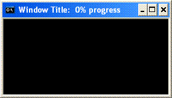

| Description: |
Showing progress in the output window seems impractical in DOS batch, since there is no way to
overwrite a previews output for an updated progress status during each progress tick. Using the
ECHO command is not nice, screen content quickly scrolls out of sight. A practicable alternative
may be to use the window TITLE for the progress message. A nice side effect is that you can
minimize the batch window and still observe the progress output in the task bar, since the task
bar text will always reflect the window title text. |
| Script: |
Download: DosProgress.bat
1.
2.
3.
4.
5.
6.
7.
8.
9.
10.
11.
12.
13.
14.
15.
16.
17.
18.
19.
20.
21.
22.
23.
24.
25.
26.
27.
28.
29.
30.
31.
32.
33.
34.
35.
36.
37.
38.
39.
40.
41.
42.
|
@ECHO OFF
set "max=11"
call :initProgress %max% "Window Title: [PPP]"
for /l %%N in (1,1,%max%) do (
ping -n 2 -w 1 127.0.0.1>NUL
call:doProgress
)
GOTO:EOF
:initProgress max format -- initialize an internal progress counter and display the progress in percent
:: -- max [in] - progress counter maximum, equal to 100 percent
:: -- format [in,opt] - title string formatter, default is '[P] completed.'
:$created 20060101 :$changed 20080327
:$source https://www.dostips.com
set /a "ProgressCnt=-1"
set /a "ProgressMax=%~1"
set "ProgressFormat=%~2"
if not defined ProgressFormat set "ProgressFormat=[PPPP]"
set "ProgressFormat=%ProgressFormat:[PPPP]=[P] completed.%"
call:doProgress
EXIT /b
:doProgress -- display the next progress tick
:$created 20060101 :$changed 20080327
:$source https://www.dostips.com
set /a "ProgressCnt+=1"
SETLOCAL ENABLEDELAYEDEXPANSION
set /a "per100=100*ProgressCnt/ProgressMax"
set /a "per10=per100/10"
set /a "per10m=10-per100/10-1"
set "P=%per100%%%"
set "PP="
for /l %%N in (0,1,%per10%) do call set "PP=%%PP%%*"
for /l %%N in (%per10%,1,9) do call set "PP=%%PP%% "
set "PPP="
for /l %%N in (0,1,%per10m%) do call set "PPP=%%PPP%%*"
set "ProgressFormat=%ProgressFormat:[P]=!P!%"
set "ProgressFormat=%ProgressFormat:[PP]=!PP!%"
set "ProgressFormat=%ProgressFormat:[PPP]=!PPP!%"
title %ProgressFormat%
EXIT /b
|
|
| Output: |
 |